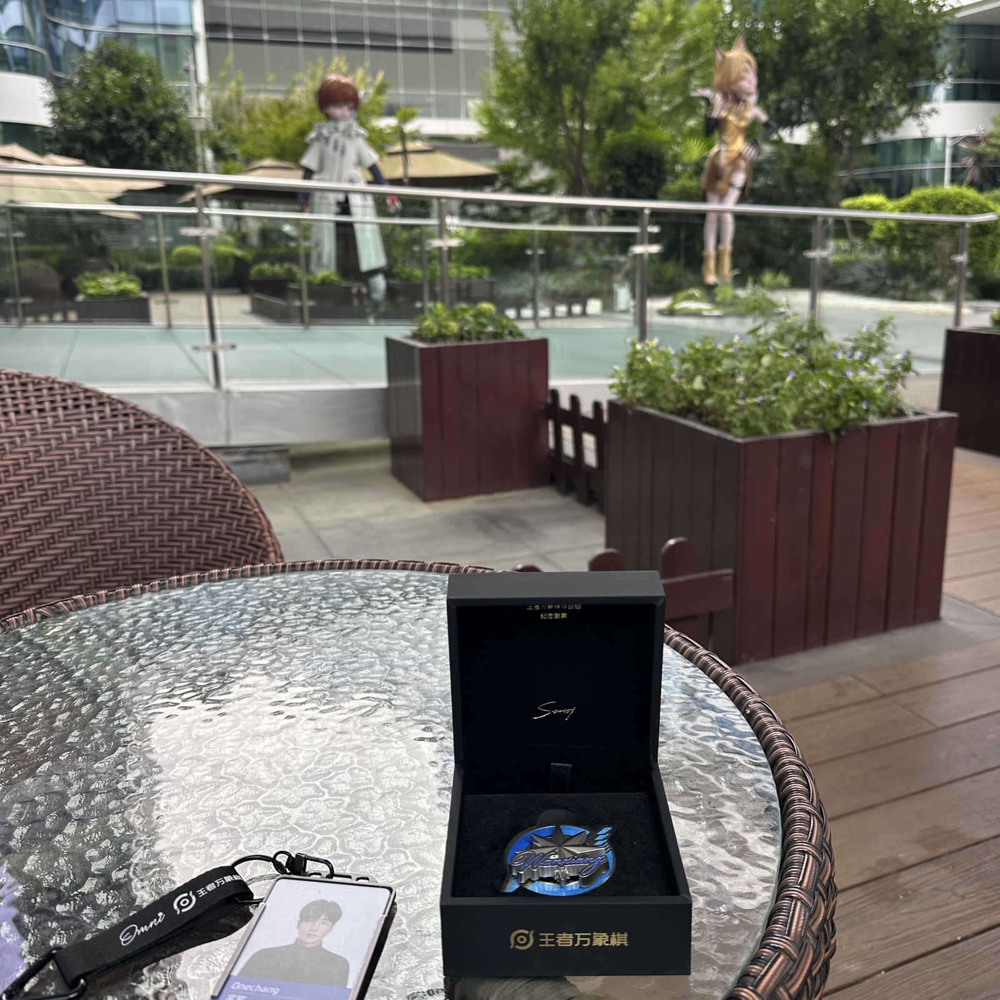
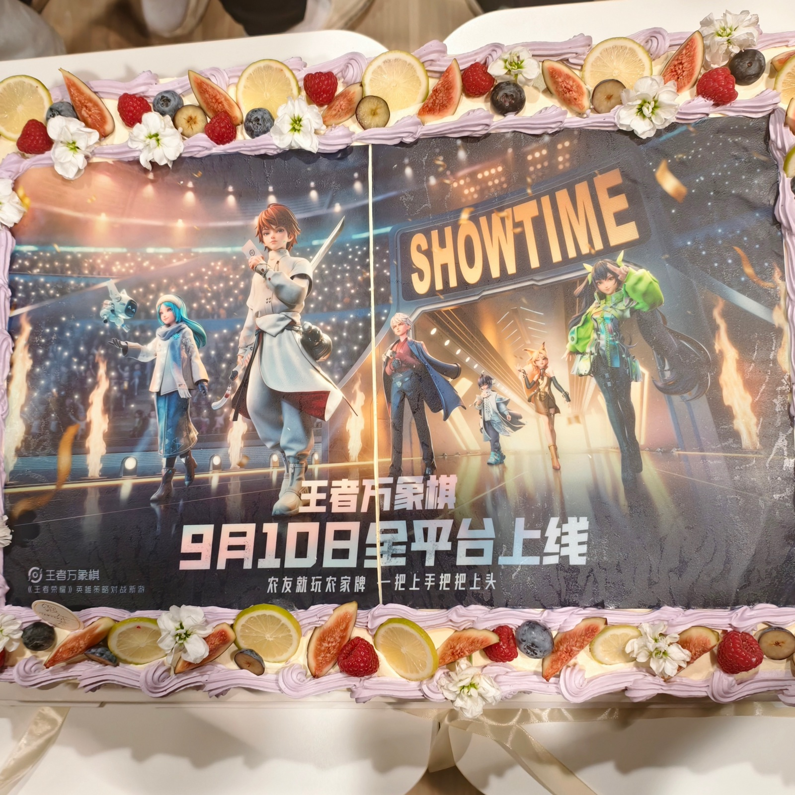

记下来
欢迎来到我，繁荣昌盛的三十岁。
不一定是什么重要节点。只是有些事情发生了，我想把它们留在这里。
- 30
三十岁的第一年
身材还有在保持。
没有突然变成一个极度自律的人。只是还在训练，还愿意照顾自己的身体。这件事很普通，但放在日子里看，也挺重要。
2026 年 9 月 10 日 · 第一次
人生中第一个国内项目上线。
做过海外项目，也走过不同类型的游戏。直到这一次，自己参与的第一个国内项目真的走到玩家面前。上线不是结束，不过它终于从设计稿和会议里，变成了一件发生过的事。

上线纪念 
9 月 10 日，平台上线
先记到这里。以后有值得记住的，再往下添。